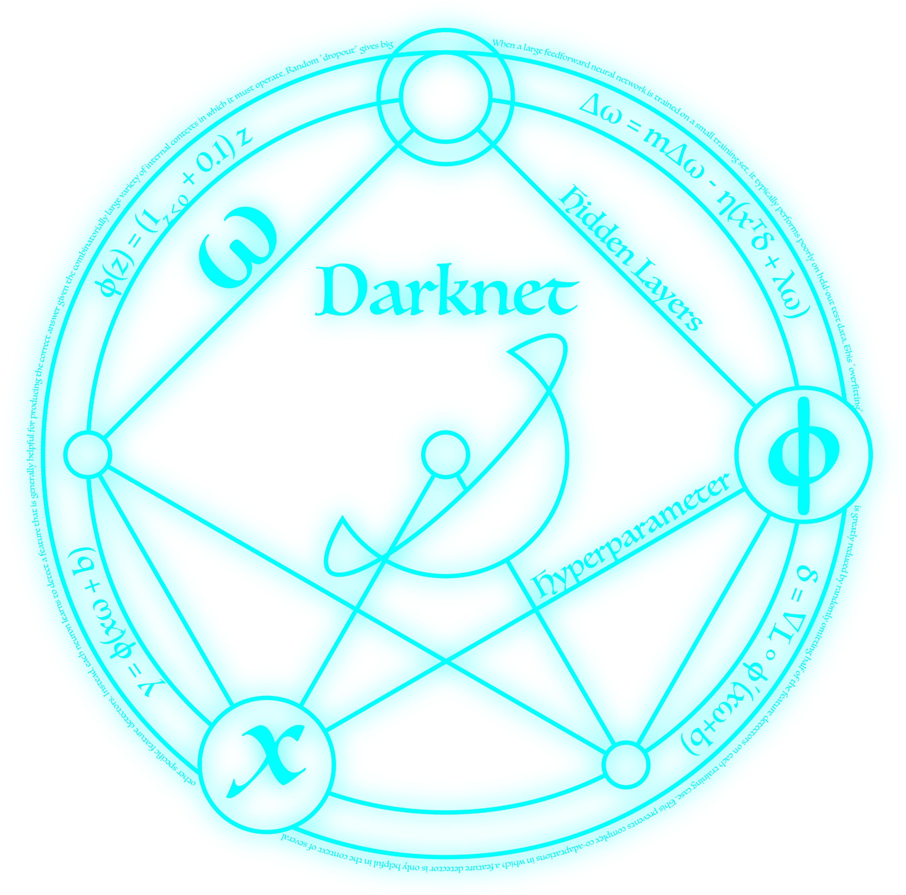
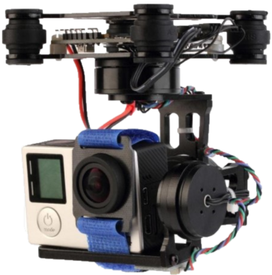
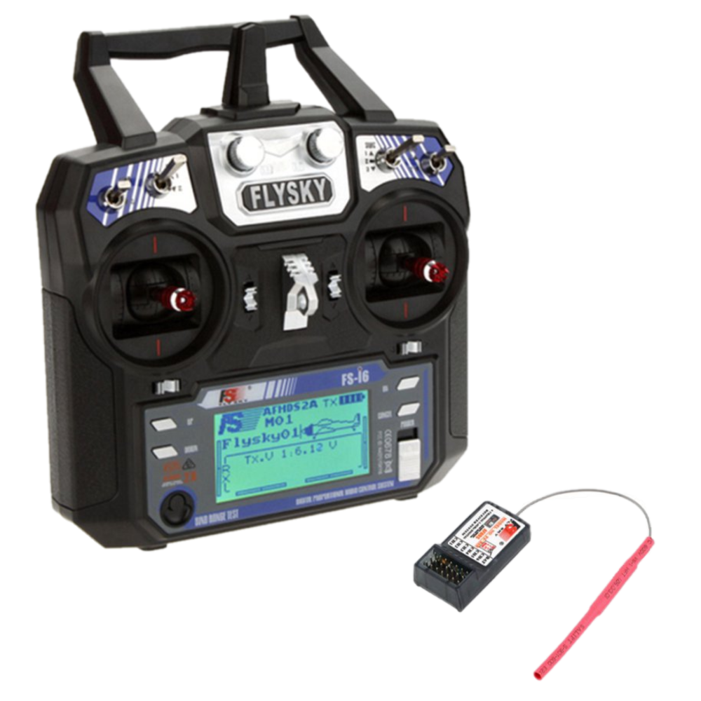
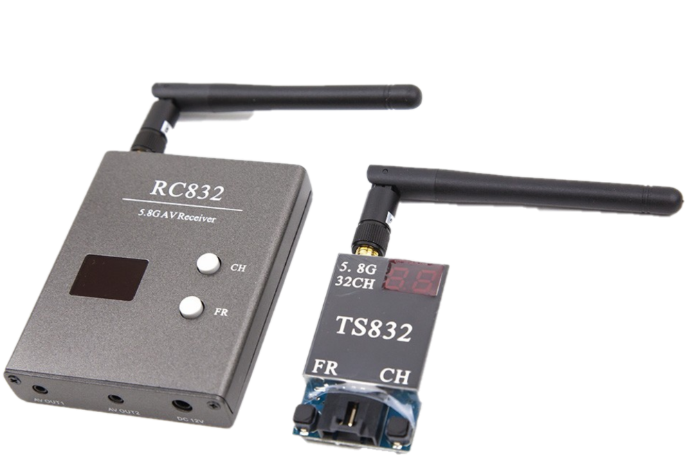

The Project
An autonomous approach to building inspection.
Conventional approaches to building inspection are laborious, costly, and dangerous. As it stands, an inspector has to personally travel around any building he would like to inspect; furthermore, in the case of a particularly tall building, he would have to be elevated to thoroughly survey the external surfaces of the structure. This process is slow, expensive, and potentially dangerous.
On the contrary, the use of an automated drone for such a task would be faster, cheaper, safer, and overall more convenient for everyone involved. The drone will be able to fly itself around a designated building and accurately identify any flaws that are externally visible. This will include features such as cracks in walls, clogged gutters, broken windows, and the like.
The purpose of our project is to create a product that is more convenient and efficient for users than the alternative. Our drone will allow a user to plug a device into their laptop and give the program some basic instructions, then receive a streamlined output of video data that they can use in lieu of performing a manual inspection. The user will not have to physically move in order to investigate the building for flaws, they can stay in one place and observe the process from a comfortable or convenient location. This drone additionally makes the inspection of taller buildings more feasible, as the operator will not have to elevate themselves in order to achieve a close investigation of the outer surfaces of the building. Additionally, any data that is recorded by the drone can be conveniently stored and later accessed by the user. Ultimately, our goal with this product is to reduce the risk, inconvenience, and potential overhead of having to perform a relatively simple task such as a building inspection.
Our group, Team Skeyes, is working with Dr. Abolfazl Razi, an engineering professor at Northern Arizona University in the Wireless Networking and Smart Health (WiNeSh) research laboratory. His personal projects are centered around predictive modeling for different applications including Wireless Networking, Smart Cities, IoT and Aerial Systems. His goal is to design new machine learning tools that model and predict network status change, user behavioral trends, and traffic mobility in order to accommodate predictable events by taking early decisions. He also does work in the medical engineering field, involving the development for tools for predictive modeling of biomedical signals for smart health applications. All of his projects are supported by NSF, NIH U54, US Airforce Research Laboratory, and Arizona Board of Regents (ABOR). A link to his personal website and portfolio can be found here.
Project Development
User Interface
-
As one of the core requirements of the project, the drone must be operable using a user
interface of some kind
- This will allow the operator to navigate the drone, configure inspection or navigation settings, or access data from the drone’s flight
- This should be written in a more familiar programming language such as Python or MATLAB
-
The drone should be able to communicate in the same capacity as what has been stated above via
the use of an app
- This should allow for interoperability as many individuals have access to or are familiar with computers
- The drone furthermore may be operable using a web server, allowing users to configure the drone or access data without a physical connection to the drone
Image Processing
The drone uses image processing in order to isolate and identify relevant information for the operator, which will take place in three steps
-
The first operation that the device must be able to perform is to identify what portions of the
video data taken may be relevant to the inspection of the structure
- This should greatly reduce the amount of video data that needs to be processed and analyzed
-
Secondly, the device must have a system of video stabilization and a means of positionally
identifying Regions of Interest (ROIs) to further inspect and record
- This will require a degree of machine learning as it will be up to the drone’s discretion to choose what areas are worthy of being investigated more
-
The system must be able to extract high-quality images from the processed video feed for direct
analysis by the operator
- This will also require machine learning processes, as the computer must identify the most helpful or relevant pieces of information to provide to the operator, without missing any
Drone Navigation and Path Planning
The drone must be able to fly and navigate around the building which it is inspecting, which will be achieved in three steps
- The drone must be operable using a remote controller, either via a radio controller or a WIFI-connected computer
- The drone must be capable of semi-autonomous flight, allowing the user to designate the drone’s flight path and ROIs, which would then be inspected by the drone without direct control
-
The drone should be capable of fully autonomous, self-planning flight
- With this mode, the drone will be given a set of parameters, and it will then generate its own flight path and ROIs through observation
- The drone should also have its own proximity obstacle detection and safe takeoff/landing protocols
System Architecture
Figure 1 shows the hardware portion of our design. The hardware is primarily separated into two fields: the drone apparatus and the ground control station. The drone is a quadcopter UAV, which is outfitted with a number of sensors and transmitters/receivers. Each of the four motors is controlled by an electronic speed controller. All of the power for the drone and auxiliary equipment is supplied by a lithium-polymer battery, and it is regulated and distributed by a power distribution board. The flight controller mounted on the drone receives positional data from its GPS antenna, accelerometer, gyroscope, and magnetometer, and it transmits this data to the ground control station via its telemetry radio. The drone carries a radio control receiver to be manually controlled by a remote controller. A gimbal system is mounted on the drone, carrying a GoPro Hero 4 camera, which streams analog video signals via radio back to a receiver connected to the ground station. The ground station consists of a laptop running the QGroundControl flight control software, connected to a telemetry radio for sending mission commands as well as a radio receiver for video data. The machine learning object recognition systems are implemented within the ground control software stack on the ground control station.
Figure 2 shows the software potion of our design. The two primary components of our software are the YOLOv4 object recognition system and the severity classification models, which are implemented using TensorFlow and OpenCV in Python. This data flow will occur within the ground control station laptop, which receives the video data wirelessly from the drone. This video data is sent to our YOLOv4 model, which annotates the video feed and displays it to the user in QGroundControl. At the same time, it outputs snipped images of structural features to the damage classification network. This classification process will determine what inputs are prompted from the user, i.e. whether they want to continue the mission or pause to keep inspecting the feature. These commands will be transmitted to the drone via MAVLink and will be displayed to the user in QGroundControl.
Technologies Used
Software
-
You only look once (YOLO) - computer vision framework

-
Darknet - computer vision implementation
 -
QGroundControl - UAS ground control software
Hardware
-
Holybro S500 drone kit
- S500 Frame
- Pixhawk 4 Flight Controller
- GPS Antenna and Telemetry Radio
- x4 2216 880 kV motors
- x4 1045 Propellers
- x4 ESC and Power Management Board
-
Storm32 Gimbal and GoPro Hero 4
 -
Flysky FR6 Radio Transmitter/Receiver
 -
5.8GHz Video Transmitter/Receiver
